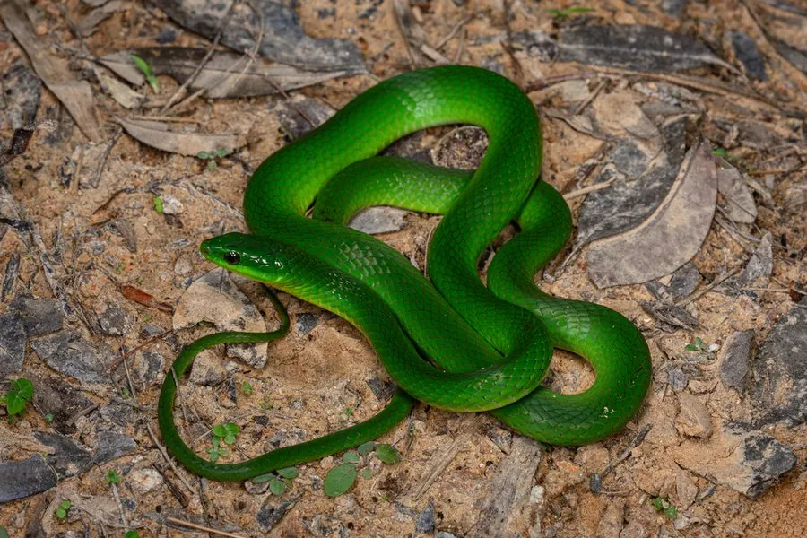

爬行动物 · 动物界
翠青蛇 Cyclophiops major

中国南方常见的无毒蛇，通体鲜绿、性情温和，与毒蛇竹叶青容易混淆，主要捕食蚯蚓和昆虫，是山林中温和的邻居。
- 分类
- 门脊索动物门纲爬行纲目有鳞目科游蛇科属翠青蛇属
- 栖息环境
- 山区森林、灌丛、农田与村舍附近的阴湿处
- 地理分布
- 中国南方多省区及越南、台湾等地
- 保护级别
- IUCN 无危（LC）；中国未列入国家重点保护名录
物种志
翠青蛇体长 0.8–1.2 米，身体细长，头部呈椭圆形，与颈部区分不明显，眼睛较大且瞳孔圆形；通体呈鲜绿或草绿色，背部和体侧没有斑纹，腹部淡黄绿色。它的体色与竹叶青相似，但头部不呈三角形、尾端也不发红，可以此区分。
它分布于中国南方以及越南、台湾等地，栖息于山区森林、灌丛、农田和村舍附近，多在白天活动，捕食蚯蚓、昆虫和小型无脊椎动物。它是卵生蛇类，雌蛇每次产卵 5–10 枚，孵化期约 50–60 天。翠青蛇无毒、性情温和，是行动缓慢的森林益蛇；由于外形与竹叶青相似，常被误认为毒蛇而遭捕杀，野外遇到时注意观察头部形状和尾端颜色即可区分，不必惊慌。
形态与习性
- 食性蚯蚓、昆虫和小型无脊椎动物
- 体长0.8–1.2 m
- 寿命约 10–15 年
- 繁殖卵生，5–10 枚，孵化 50–60 天
- 活动节律昼行性，行动缓慢
- 毒性无毒，对人无害
趣味知识
- 翠青蛇通体鲜绿，常被误认为毒蛇竹叶青，但它的头部是椭圆形。
- 竹叶青尾端焦红、头呈三角形，而翠青蛇尾端仍是绿色。
- 翠青蛇性情温和，主要捕食蚯蚓，是森林中的益蛇。